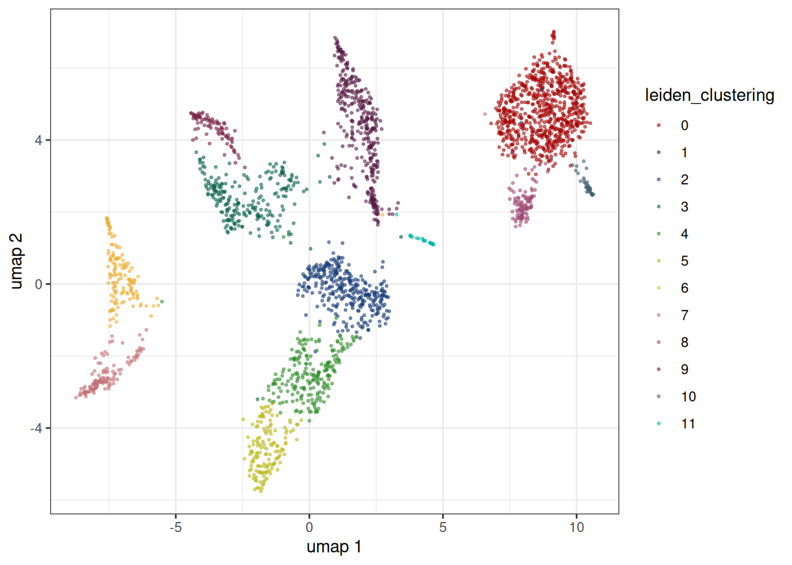

library(bixverse)
library(bixverse.plots)
library(patchwork)
library(ggplot2)
library(data.table)
#>
#> Attaching package: 'data.table'
#> The following object is masked from 'package:base':
#>
#> %notin%Single cell ATAC without RNA
2026-11-28
Intro
Most single cell ATAC data has no RNA next to it: Cell Ranger ATAC runs, or public fragment files. This vignette starts from a fragment file alone: cells called from the fragment counts, QC and multiplets, peaks per cluster, TF-IDF and LSI, clusters and differential accessibility, then gene activity and labels transferred from an RNA reference.
The fragments are the ATAC half of the 10x PBMC 3k multiome used in the multiome vignette. That has a use here: its RNA half is a reference built from the very same nuclei, so we can check the transferred labels against the RNA clusters of each cell, which a real ATAC-only data set cannot offer.
An ATAC-only experiment is a SingleCellsAtac: its own store holds the peaks or tiles, and the ATAC functions take it exactly as they take the ATAC side of a SingleCellsMultiModal. modality = "atac" and the default both name its store.
data_dir <- download_pbmc_multiome()
fragments <- file.path(data_dir, "pbmc_unsorted_3k_atac_fragments.tsv.gz")
gtf <- file.path(data_dir, "gencode.v32.primary_assembly.annotation.gtf.gz")
blacklist <- file.path(data_dir, "hg38-blacklist.v2.bed.gz")
cr_peaks <- file.path(data_dir, "pbmc_unsorted_3k_atac_peaks.bed")
h5_path <- file.path(data_dir, "pbmc_unsorted_3k_filtered_feature_bc_matrix.h5")
new_dir <- function(name) {
path <- file.path(tempdir(), name)
dir.create(path, showWarnings = FALSE)
path
}Calling cells
Without a barcode list the cells come from the fragment counts: real cells carry thousands of fragments, empty droplets a handful. The knee plot of fragments per barcode, sorted, shows where the two meet. With Cell Ranger ATAC output, cellranger = "singlecell.csv" takes its calls instead.
counts <- barcode_fragment_counts(fragments)
counts[, rank := seq_len(.N)]
ggplot(counts, aes(x = rank, y = n_fragments)) +
geom_line() +
geom_hline(yintercept = 3000, linetype = "dashed", colour = "grey") +
scale_x_log10() +
scale_y_log10() +
labs(x = "Barcode rank", y = "Fragments") +
theme_bx()
The knee sits near 3,000 fragments. We call cells there and count them into the peaks Cell Ranger called on all cells pooled, which every Cell Ranger ATAC run ships. They are good enough to cluster on; better peaks come from the clusters below.
first <- load_atac_fragments(
SingleCellsAtac(dir_data = new_dir("atac_first")),
fragments = fragments,
peaks = cr_peaks,
min_fragments = 3000L,
.verbose = FALSE
)
first
#> Single cell experiment (ATAC).
#> No cells (original): 2597
#> To keep n: 2597
#> No features: 81156
#> Kind: peak (insertion counts)
#> TF-IDF: FALSE
#> Embeddings: none
#> KNN generated: FALSE
#> Graph generated: FALSE
#> Gene activity: FALSE
#> Stale artefacts: noneQuality control
The same metrics as with RNA next to it: fragments, nucleosome signal, TSS enrichment, and AMULET’s multiplet calls, which need nothing but the fragments.
first <- fragment_qc_sc(first, fragments = fragments, gtf = gtf)
first <- amulet_sc(first, fragments = fragments, restrict_beds = blacklist)
profiles <- fragment_profiles_sc(first, fragments = fragments, gtf = gtf)
tss_profile_plot_sc(profiles$tss) + fragment_length_plot_sc(profiles$lengths)
obs <- first[[c(
"cell_id",
"atac_n_fragments",
"atac_nucleosome_signal",
"atac_tss_enrichment",
"amulet_multiplet"
)]]
keep <- obs$atac_nucleosome_signal < 2 &
obs$atac_tss_enrichment > 2 &
!obs$amulet_multiplet
sprintf("keeping %i of %i cells", sum(keep), nrow(obs))
#> [1] "keeping 2460 of 2597 cells"
first <- set_cells_to_keep(first, obs$cell_id[keep])First clusters
TF-IDF, LSI and Leiden on Cell Ranger’s peaks give the clusters to call peaks on.
first <- run_tfidf_sc(first)
first <- find_top_features_sc(first, min_cutoff = "q25")
first <- calculate_lsi_sc(
first,
lsi_params = params_atac_lsi(n_comp = 30L),
.verbose = FALSE
)
first <- find_neighbours_sc(first, embd_to_use = "lsi", .verbose = FALSE)
first <- find_clusters_sc(first, res = 0.8, .verbose = FALSE)Peaks
Peaks per cluster, merged, blacklist and contigs dropped, then the fragments counted against them into the experiment we keep, for the cells that passed QC.
peaks <- call_peaks_sc(
first,
fragments = fragments,
group_by = "leiden_clustering"
)
peaks <- peaks[grepl("^chr[0-9XY]+$", chrom)]
peaks <- remove_blacklisted(peaks, blacklist)
atac <- load_atac_fragments(
SingleCellsAtac(dir_data = new_dir("atac_peaks")),
fragments = fragments,
peaks = peaks,
barcodes = get_cell_names(first, filtered = TRUE),
.verbose = FALSE
)
atac <- fragment_qc_sc(atac, fragments = fragments, gtf = gtf)
atac <- annotate_peaks_sc(atac, gtf = gtf)
atac
#> Single cell experiment (ATAC).
#> No cells (original): 2460
#> To keep n: 2460
#> No features: 117829
#> Kind: peak (insertion counts)
#> TF-IDF: FALSE
#> Embeddings: none
#> KNN generated: FALSE
#> Graph generated: FALSE
#> Gene activity: FALSE
#> Stale artefacts: noneTF-IDF, LSI, clusters
atac <- run_tfidf_sc(atac)
atac <- find_top_features_sc(atac, min_cutoff = "q25")
atac <- calculate_lsi_sc(atac, .verbose = FALSE)
lsi_depth_plot_sc(get_lsi_depth_cor(atac))
atac <- find_neighbours_sc(
atac,
embd_to_use = "lsi",
no_embd_to_use = 30L,
.verbose = FALSE
)
atac <- find_clusters_sc(atac, res = 0.8, .verbose = FALSE)
atac <- umap_sc(atac, embd_to_use = "lsi", .verbose = FALSE)
embedding_plot_sc(
atac,
embedding = "umap",
colour_by = "leiden_clustering",
discrete = TRUE,
point_size = 0.5
)
Differential accessibility
On an ATAC experiment the marker functions test peaks by default, with the logistic regression that takes the library size as covariate. As in the multiome vignette, treat the p-values as a ranking.
da <- find_all_markers_sc(
atac,
column_of_interest = "leiden_clustering",
.verbose = FALSE
)
annotation <- get_sc_var(atac, cols = c("gene_id", "closest_gene"))
setnames(annotation, "gene_id", "feature_id")
da <- merge(da, annotation, by = "feature_id", all.x = TRUE)
head(da[fdr < 0.05][order(-lfc)], 10)
#> feature_id grp lfc prop1 prop2 z_scores
#> <char> <int> <num> <num> <num> <num>
#> 1: chr7:98642109-98642369 11 2.572098 0.5238096 0.0004100041 9.989734
#> 2: chr10:33715301-33715777 11 2.246233 0.4761905 0.0012300123 9.140167
#> 3: chr7:98641559-98642020 11 2.126829 0.4761905 0.0028700286 8.652970
#> 4: chr3:53190375-53190965 11 2.042240 0.4761905 0.0065600658 8.244228
#> 5: chr14:89773085-89773520 11 2.030936 0.4285714 0.0028700286 8.253377
#> 6: chr3:134956410-134956769 11 1.952577 0.3809524 0.0008200082 8.299813
#> 7: chr2:176491200-176491557 11 1.939827 0.4285714 0.0028700286 8.010924
#> 8: chr20:38725341-38725627 11 1.895438 0.3809524 0.0032800329 7.818633
#> 9: chr9:106757643-106757934 11 1.892387 0.3809524 0.0000000000 8.895523
#> 10: chr15:58454448-58454750 11 1.890009 0.3333333 0.0008200082 8.126713
#> p_values fdr closest_gene
#> <num> <num> <char>
#> 1: 8.451750e-24 3.035953e-19 NPTX2
#> 2: 3.117797e-20 5.599719e-16 NRP1
#> 3: 2.508814e-18 2.252978e-14 NPTX2
#> 4: 8.311467e-17 3.731953e-13 PRKCD
#> 5: 7.698999e-17 3.731953e-13 EFCAB11
#> 6: 5.213770e-17 3.121397e-13 EPHB1
#> 7: 5.692503e-16 1.572926e-12 MTX2
#> 8: 2.670012e-15 5.328305e-12 SLC32A1
#> 9: 2.907231e-19 3.481021e-15 ZNF462
#> 10: 2.205437e-16 6.601791e-13 ALDH1A2Labels from an RNA reference
Gene activity puts the ATAC cells in gene space, where an RNA reference can meet them. The reference here is the RNA of the same 3k nuclei, clustered the usual way; in practice it would be any annotated RNA data set of the tissue.
rna <- load_tenx_h5(
SingleCells(dir_data = new_dir("atac_rna")),
h5_path = h5_path,
.verbose = FALSE
)
rna <- find_hvg_sc(rna, hvg_no = 2000L, .verbose = FALSE)
rna <- calculate_pca_sc(rna, no_pcs = 30L, .verbose = FALSE)
rna <- find_neighbours_sc(rna, .verbose = FALSE)
rna <- find_clusters_sc(
rna,
res = 0.8,
name = "rna_cluster",
.verbose = FALSE
)
ga <- gene_activity_sc(atac, fragments = fragments, gtf = gtf, .verbose = FALSE)
transfer <- transfer_labels_seurat_sc(
reference = rna,
query = ga,
label_column = "rna_cluster",
weight_embedding = get_embedding(atac, "lsi"),
.verbose = FALSE
)Each ATAC cell’s predicted cluster against the RNA cluster of the same barcode:
truth <- rna[[c("cell_id", "rna_cluster")]]
pred <- merge(
transfer[, .(cell_id, predicted = predicted_rna_cluster)],
truth,
by = "cell_id"
)
sprintf(
"%i shared cells; the transferred label is right for %.1f%%",
nrow(pred),
100 * mean(pred$predicted == as.character(pred$rna_cluster))
)
#> [1] "2399 shared cells; the transferred label is right for 87.5%"
umap_dt <- data.table(
get_embedding(atac, "umap"),
predicted = transfer$predicted_rna_cluster
)
setnames(umap_dt, 1:2, c("UMAP_1", "UMAP_2"))
ggplot(umap_dt, aes(UMAP_1, UMAP_2, colour = predicted)) +
geom_point(size = 0.5, alpha = 0.5) +
theme_bx()